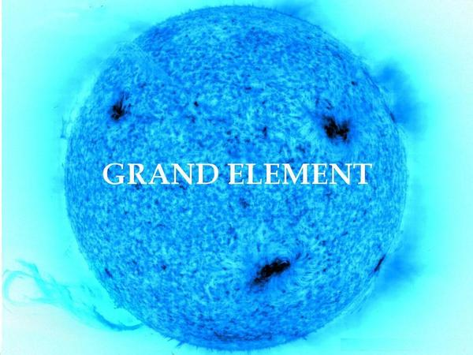

GRAND ELEMENT · MUSIC
RETURN TO RADIO
MUSIC LIST
PAUSE
NEXT
ALBUMS
PLAYLISTS
Loading albums…
Loading public playlists…
← ALBUMS
ALBUM
PLAY ALBUM
ADD WHOLE ALBUM
ADD ALL SONGS
SAVE PLAYLIST
SAVED PLAYLISTS
LOAD PLAYLIST
DELETE
PLAY SELECTED
CLEAR
0 SONGS SELECTED

The Inner Frequency
Your free music preview is ending. Enter an access code or explore music.
ACCESS
EXPLORE MUSIC